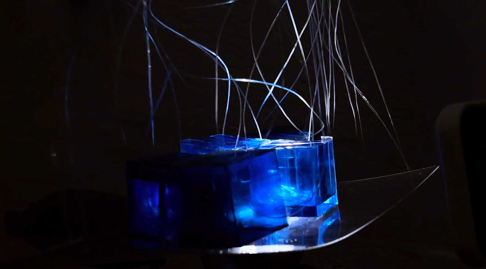
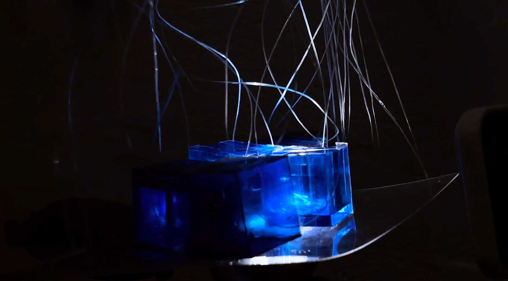
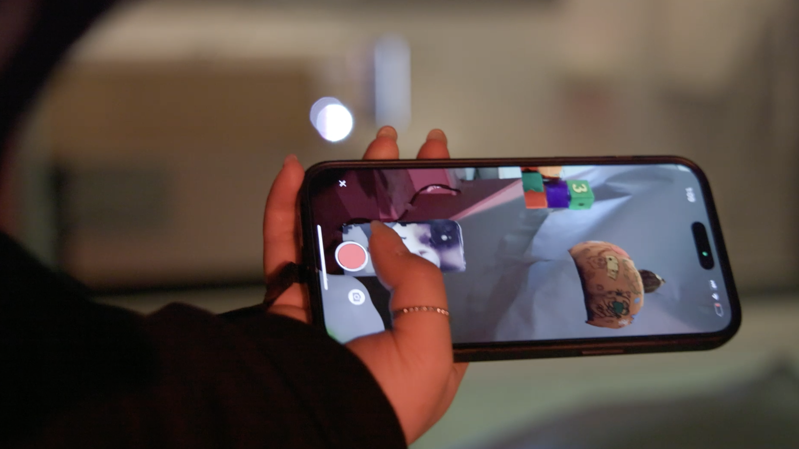
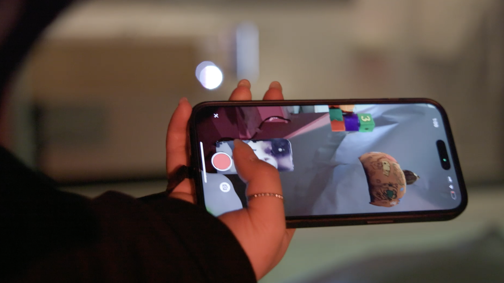

X
BECAUSE WE WERE ANIMALS BEFORE
Leding Zhang, Nathan Petree, Ruoxi Xiong
"BECAUSE WE WERE ANIMALS BEFORE" provokes one to meditate on ideas of self-domestication through an immersive exploration of consciousness. Over time, humans have empirically become more passive beings simply as a byproduct of societal growth. But if a society enforces this passiveness, this byproduct can be made into something intentionally created, and by doing so, accelerated. So, with an immersion into societal mores of pacifism, one can be conditioned over time to become a self-pacifying being, no longer needing an authoritative figure to push these values onto them. And this is where utopia is born.
In a space separated from society by a myriad of trees, the viewer is guided by a soundwalk, placing them in the consciousness of someone leaving society, joining this utopia. They are led along a path through the woods to the installation space, which engages with all the viewer’s senses, making this process tangible. The viewer sits alone, strapped to another’s consciousness, lulled into a new way of being.


 



 
